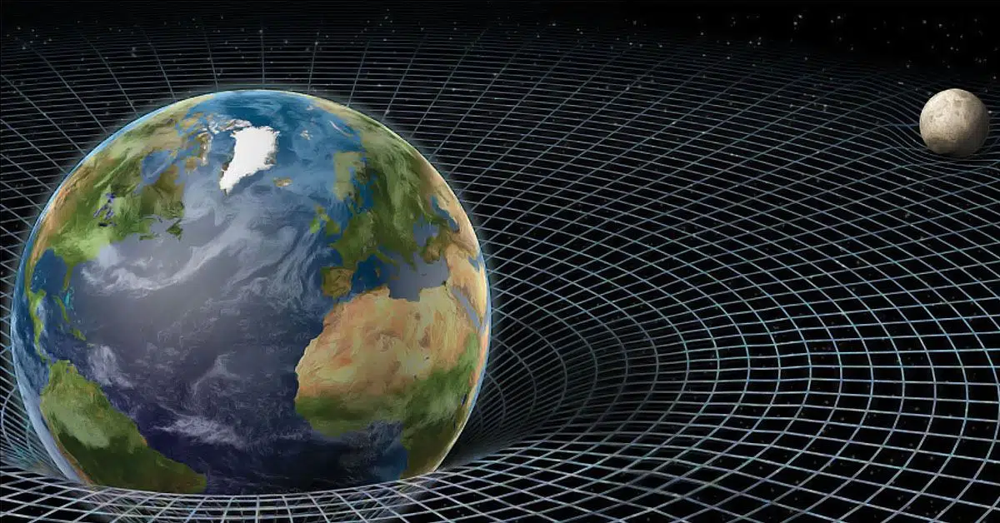
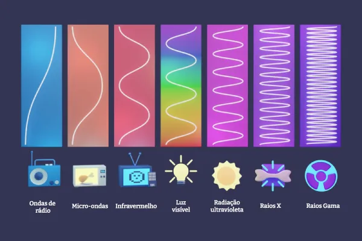

A astrofísica, em seu nível introdutório, fornece as bases para entender como os
fenômenos celestes são explicados pelas leis fundamentais da física. Nessa etapa,
conceitos essenciais como gravitação, radiação e dinâmica orbital ganham destaque.
Gravitação Universal
A gravidade é a interação fundamental responsável pela formação de sistemas
planetários, pela estrutura das galáxias e pela dinâmica do universo em grande escala.
Newton descreveu a atração entre massas como uma força proporcional ao produto das massas
e inversamente proporcional ao quadrado da distância. Einstein reformulou essa visão
descrevendo a gravidade como a curvatura do espaço-tempo causada pela massa-energia.

Radiação Eletromagnética
A maior parte das informações sobre o universo chega até nós através da radiação
eletromagnética: luz visível, ondas de rádio, raios-X e outras frequências. O
espectro eletromagnético é a principal fonte de dados observacionais da astrofísica,
permitindo analisar temperatura, composição química e movimento de estrelas e galáxias.

Dinâmica Orbital
O movimento dos corpos celestes segue as leis de Kepler, derivadas da interação gravitacional.
Planetas descrevem órbitas elípticas ao redor de suas estrelas, e a velocidade orbital depende
da massa do corpo central e da distância em relação a ele. Esses princípios explicam desde o
funcionamento de satélites artificiais até o movimento de exoplanetas em sistemas distantes.